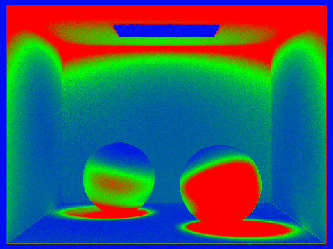

Project 3-1: Pathtracer
Partners: Jinghua Zhang, Zhiwei Zheng
Here is the link to our pages: https://jzhang866.github.io/proj-webpage-sp23-team1122_no2-/
Overview
In assignment 3, we have implemented some core functions of a physically-based renderer through a pathtracing algorithm. Specifically, we first finished Ray Generation and Scene Intersection, and BVH Acceleration. Based on
these functions, we then implemented Direct Illumination and Global Illumination. Finally, we implemented Adaptive Sampling to sample more efficiently.
Part 1
1.1 About the ray generation, we cast one ray per pixel. In some other words, we generate a ray starting at the camera and going through the
corresponding pixel to obtain the information(shape and appearance) in environments. In practice, we might generate several rays per pixel and average the results as the value
of the pixel. About the primitive intersection, we would test whether the generated rays hit or intersect any objects in environments after generating rays. We would obtain the value
by testing whether the ray hit any objects and what's the first object that the ray hits. We test the intersection by solving equations and usually the information of the first hit object would be the
value of the ray.
1.2 In our implementation, we test triangle intersection by first testing whether the ray intersects with the plane which the triangle is in. This can be easily achieved since we
have the vertices of the triangle, which allow us to get the norm of the plane. Since we can also get the ray equation with respect to t and the plane equation with respect to t. Then we can
test whether there is a point with some specific t' satisfies both equations and examine the validity of t'. Then we would test whether the point is in the triangle as what we did in
assignment 1. If it is, we would return true and update the range of ray's t. Otherwise, we would simply return false.
1.3
Part 2
2.1 To construct BVH, we first implement some base case. Specifically, we first check whether the number of input primitives is less than the max_leaf_size. If true, we would take this node as a
leaf and return. If not, we would split these primitives into two parts through a heuristic method, and then we would recursively call construct_bvh to create the two corresponding nodes and assign
these two nodes as the left and the right child node of the previous one. About our heuristic method used to separate primitives into two groups, we first obtain the mean of the centroids of the bounding boxes of all
primitives. Then we would count the numbers of primitives in two groups after the separation. Specifically, the primitives whose x is smaller than the mean's would be taken in one group and others would
be in the other group. We do these along x-axis, y-axis and z-axis correspondingly. Then, we would choose the axis, along which the numbers of primitives assigned into two groups are as close as possible, as the final axis used
to split primitives. We think this would help us to split primitives as evenly as possible, trying to avoid creating some empty nodes.
2.2

blo

CBdragon

CBlucy

wall-e
2.3 We test our BVH acceleration on two rendering cases, one is CBcoil and another one is CBbunny. About CBcoil, without BVH acceleration, it took 22.8770 sec to do the rendering, while it took
0.0846 with BVH acceleration. About CBcoil, without BVH acceleration, it took 134.9340 sec to do the rendering, while it took 0.0735 with BVH acceleration. It is very interesting to see that though some case takes
much longer to render without BVH acceleration, with BVH acceleration they almost finish rendering in the same time. One reason we think is though the number of primitives in two rendering cases might
be significantly different, if the distributions of these primitives in the environments are quite similar, the rendering time would be similar, but of course we also need to take the size and the viewpoint and some other factors
into consideration.

CBbunny
Part 3
3.1 Walk through both implementations of the direct lighting function.
Direct Lighting with Uniform Hemisphere Sampling:
The starter coded provided us the hit point and w_out as pointing towards the source of the ray. We then sample num_samples lights, where num_samples = ns_area_light (number samples per light source) * the number of lights.
We use UniformHemisphereSampler3D::get_sample() to return a uniformaly random sampled direction vector onto the hemisphere in the object-space coordinate w_in. We then create a new Ray using the hit point and the sampled direction in world space (o2w * wi).
If the ray intersects with a light source, we will then add it to our Monte Carlo estimator calculation. We used BSDF::f function to calculate the BSDF vector fr(p, wi -> wr), provided cos_theta(w_in) to calculate theta, and bsdf->get_emission() to calculate Li(p, wi).
To normalize over the hemisphere, we also divide L_out by num_samples and 2 * PI (because uniformaly sampled in hemisphere, p(wi) = 1 / (2 * pi)).
Direct Lighting by Importance Sampling Lights:
We iterate over the lights in the scene, and samples the lights using SceneLight::sample_L. If the light is a delta light which indicates that it is a point light source, we will only sample once. Otherwise, we will sample ns_area_light times (number samples per light source).
SceneLight::sample_L will give us wi, the sampled direction between hit point and the light source in world space. We then create a new Ray using the hit point and wi. We set the ray's min_t to EPS_F for numerical precision, and max_t to be the distToLight (the distance between light source and hit point) - EPS_F.
Since wi is in world space, we will convert it to object space w_in_obj = w2o * wi. We only cast a ray if no other object between hit point and the light source (no intersects between the newRay and the shadow isect), and in the direction (cos_theta(w_in_obj) > 0). If these conditions are met, we will calculate the Monte Carlo estimaor by adding
the emitted radiance * BSDF vector fr(p, wi -> wr) (using BSDF::f) * cos_theta(w_in_obj) / pdf. We will finally normalize the estimator by dividing the L_out with number of samples.
3.2 Show some images rendered with both implementations of the direct lighting function.
CBbunny.dae, Direct Lighting with Uniform Hemisphere Sampling, 64 camera rays per pixel, 32 samples per area light
CBbunny.dae, Direct Lighting with Importance Sampling Lights, 64 camera rays per pixel, 32 samples per area light
dragon.dae, direct Lighting with Importance Sampling Lights, 64 camera rays per pixel, 32 samples per area light
3.3 Compare the noise levels in soft shadows
It is clear from the comparson below that the noise decreases linearly and largely with the increase of number of sample light rays, and the shadows smoothes out with the increase of number of light rays.
CBbunny.dae, Importance Sampling Lights, 1 light ray, 1 sample per pixel
CBbunny.dae, Importance Sampling Lights, 1 light ray, 4 sample per pixelt
CBbunny.dae, Importance Sampling Lights, 1 light ray, 16 sample per pixel
CBbunny.dae, Importance Sampling Lights, 1 light ray, 64 sample per pixel
3.4 Compare the results between uniform hemisphere sampling and lighting sampling in a one-paragraph analysis
The importance sampling lights method converges much faster (it has little noise when only 16 light ray and 8 samples per light) and with much less noise, while the uniform hemisphere presents much noise even with 64 light ray and 32 sample per pixel. This is because importance samplingwe only consider
samplings from light rays that contribute to the lighting of the objects in the scene, while the noise in uniform hemisphere sampling is because only a small portion of sampled rays actually intersects with the light source.
Uniform Hemisphere Sampling, 64 light ray, 32 sample per pixel
Importance Sampling Lights, 64 light ray, 32 sample per pixel
Uniform Sampling Lights, 32 light ray, 16 sample per pixel
Importance Sampling Lights, 32 light ray, 16 sample per pixel
Uniform Sampling Lights, 16 light ray, 8 sample per pixel
Importance Sampling Lights, 16 light ray, 8 sample per pixel
Part 4
4.1 Walk through your implementation of the indirect lighting function.
If the max_ray_depth is 0, we will return only zero_bounce_radiance, which is the rendering with no bounces of lights.
If the max_ray_depth is greater or equal to 1, we will initialize the illumination from one_bounce_radiance (which is the direct illumination of either hemisphere or importance sampling).
For max_ray_depth > 1, we will use recursive functions to calculate indirect lighting. We initialize each ray with max_ray_depth depth; for each recursive call, we will minus the depth by 1. Termination conditions are either:
1) the rays' depth is smaller or equal to 0; or
2) It is not the first indirect ray sampling and the generated random probability is smaller than the Russian Roulette number (we set to 0.7 here).
If not terminated, we will sample a new incoming ray direction given the outgoing radiance w_out and writes the sampled incoming direction vector to wi and probability to pdf pointers.
We then create a new Ray using the hit point and the sampled direction in world space (o2w * wi), and sets its depth to be max_ray_depth and min_t to be EPS_F.
If this incoming ray intersects with the light, we will recursively calculate its radiance by calling at_least_one_bounce_radiance on the new incoming ray. We will then add the radiance from at_least_one_bounce_radiance *
current's bsdf function * cos_theta(wi), and then normalize the weight by dividing by pdf and the russianRoulette probability.
4.2 Show some images rendered with global (direct and indirect) illumination. Use 1024 samples per pixel.
Global illumination, 5 maximum ray depths, 1024 samples per area light
Global illumination, 5 maximum ray depths, 1024 samples per area light
4.3 Compare only direct illumination, then only indirect illumination
As we could see, with only direct lighting, the areas of lighting source (e.g. ceiling light) or one bounce areas (bunny back under the ceiling light) are lighter, where other parts are much darker and the contrast is pretty obvious.
With indirect lighting only, areas that could be lighted up from lights bouncing around (the bunny body) are lighter than the left image, and the lights on the bunny are more equal than the left image.
Global illumination, direct lighting only, 5 maximum ray depths, 1024 samples per area light
Global illumination, indirect lighting only, 5 maximum ray depths, 1024 samples per area light
4.4 Compare max_ray_depth to 0, 1, 2, 3, 100

Global illumination, 0 maximum ray depths, 1024 samples per area light
Global illumination, 1 maximum ray depths, 1024 samples per area light
Global illumination, 2 maximum ray depths, 1024 samples per area light
Global illumination, 3 maximum ray depths, 1024 samples per area light

Global illumination, 100 maximum ray depths, 1024 samples per area light
4.4 Compare sample-per-pixel rates - 1, 2, 4, 8, 16, 64, and 1024
Global illumination, 4 light ray, 5 max ray depths, 1 samples per area light
Global illumination, 4 light ray, 5 max ray depths, 2 samples per area light
Global illumination, 4 light ray, 5 max ray depths, 4 samples per area light
Global illumination, 4 light ray, 5 max ray depths, 8 samples per area light
Global illumination, 4 light ray, 5 max ray depths, 16 samples per area light
Global illumination, 4 light ray, 5 max ray depths, 64 samples per area light
Global illumination, 4 light ray, 5 max ray depths, 1024 samples per area light
Part 5
5.1 Walk through your implementation of the adaptive sampling.
When rendering samples per pixel, we don't have to have to always In the PathTracer::raytrace_pixel() function, if the current number of pixels we calculated is a multiply of samplesPerBatch, we will calculate the samples' illuminance xk to
compute the mean and variance. Then we compare the current I = 1.96 * square root of variance / square root of current sample count with the maxTolerance * mean. If the condition is met, it means current pixel has converged and we will stop generating new samples.
5.2 Pick two scenes and render them with at least 2048 samples per pixel
The scenes are rendered with 2048 samples per pixl, 5 max ray depth, and 1 sample per light. As we could see from the heat map, areas that are lighter (e.g. top of bunny's back or the wall next to bunny, top of the spheres) will converge faster with more green / blue,
while other ares that are darker (the sahdes areas of the spheres) will require longer to converge and shows as red in the heat map.

Sphere rendeirng heat map